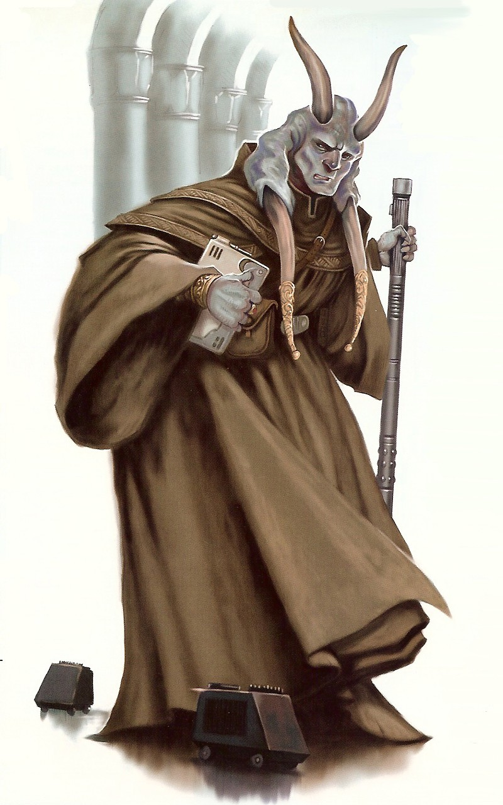

Chagrian
chagrian
Special Abilities: Chagrians begin the game with one rank in Resilience. They still may not train Resilience above rank 2 during character creation.
Amphibious: Chagrians can breathe underwater without penalty and never suffer movement penalties for traveling through water.
Knowledge Specialization: Chagrians start with one rank in the Knowledge Specialization talent .
A balanced and serene species, Chagrians are peaceful and stoic. They hail from a wealthy planet, and few native Chagrians have wanted for life’s basic necessities—or even many of its luxuries. As such, Chagrians are rarely greedy or avaricious, and their desires are seldom motivated by such basic needs. Additionally, Chagrians are sticklers for procedure and law, and they are unwilling to deviate from the legal and bureaucratic systems they are accustomed to. Such predilections ensure that Chagrians make excellent Soldiers, Commanders, and Diplomats.
Chagrians begin their lives in an immature tadpole form some thirty centimeters in length. Born in clutches of two or three siblings, they are cared for by their parents in sealed tubs kept within the home. As they mature, Chagrian children develop arms, legs, and lungs that allow them to breathe air. Once their limbs are fully developed, young Chagrians leave the water, and the last vestiges of their intermediate physiology begin to fade away. Adult Chagrians are humanoid and stand two meters tall on average. They possess powerful, muscular bodies well suited to swimming and heavy labor. As a result of their homeworld’s exposure to an unstable sun during their species’ evolution, Chagrian skin runs the gamut from light blue to cerulean to indigo, and it provides them with an innate resistance to harmful radiation. Though their planet’s sun has been stable for millennia, this radiation resistance has become a dominant trait of their species.
Chagrians possess elegant horns growing down from the sides of their heads. Males possess a second set atop their skulls, called lethorns. Once used during mating rituals, the horns were also employed as weapons during formal duels. Though duels for mates have since been outlawed, Chagrians, especially males, consider their horns a sign of status. A large portion of Chagrian daily personal ritual consists of caring for their horns, filing and decorating them in an otherwise uncharacteristic display of vanity.
Despite having air-breathing lungs, Chagrians are as comfortable below the waves of their planet as they are above them. They are excellent swimmers, and their eyes have developed to help them see in dim, subaquatic light. Able to breathe underwater as well, Chagrians can remain submerged for months or years at a time without suffering any ill effects. They adapt easily to the seas of other planets as long as the alien ocean’s chemistry is similar to that of their own planet.
Because of their constant exposure to the salty oceans of their planet, Chagrians can taste little else but salt. As a result, their sense of taste is incredibly weak, and they obtain little pleasure from eating. Rather than tasting food, Chagrian tongues act to enhance their sense of smell, much as those of some reptilian species. As such, they can often be seen briefly flicking their tongues out when assessing the viability of unfamiliar food or drink.
Chagrian society is law abiding and peaceful. Justice, both legal and social, is valued above all other things, and Chagrian courts are some of the most fair and balanced in the galaxy. Both criminal and civil investigations are meticulous and thorough, and even the most innocuous forms of evidence are carefully studied. Even those Chagrians put on trial are all too willing to admit their guilt, and only the most craven Chagrians deny the charges brought against them if they are true. This ensures that most criminal trials are brief affairs with little, if any, fanfare.
Given their homeworld’s focus on tourism, Chagrians are accommodating and obedient—sometimes to a fault. Despite this desire to please others, Chagrians aren’t ignorant of cruelty or bias. In fact, their affluent culture allows them to take notice of social injustices more quickly than other, less privileged species, who might otherwise consider such inequity to be normal.
Because of the richness of their homeworld and the amenities enjoyed by their people—such as excellent medical care, higher education, and social equality—Chagrians rarely want for anything. As a result, they are easily disturbed by concepts such as prejudice, homelessness, disease, and starvation, especially when confronted with them on other worlds. Many Chagrians are so moved by such sights that they seek to remedy them, whether through charity, by taking direct action, or by using local law to initiate lasting change.
Due to their species’ weak sense of taste, Chagrians consider meals to be an inconvenience at best. As a result, most Chagrians carry nutritional supplements or food capsules in an effort to shorten the time they spend eating. The concept of celebratory banquets is largely unheard of outside of Champala’s opulent resorts and hotels, and offworld chefs are hired at great expense to satisfy the refined palates of tourists and visitors.
Chagrians in positions of authority—including those in command of Rebel military units—go to great lengths to see to the well-being of their subordinates. As long as supply lines remain open and logistics are competently managed, a unit commanded by a Chagrian officer is sure to be well fed, properly equipped, and highly motivated. Unfortunately, such officers are often unwilling to lose the lives of their troops, even when such sacrifice is called for.
Champala is a watery world featuring dramatic tides and beautiful coastlines. Chagrian settlements are built within the tidal zones of Champala’s coastlines, and as the tides ebb and flow, these communities are engulfed by the rising sea. Chagrians, given their amphibious nature, are unimpeded by such events, which are as common and expected as the sun and seasons. The only Chagrian-built structures designed to remain above the rising tides are the planet’s spaceports, including the one in Champala’s capital city of Tidros.
The majority of the Chagrian economy centers on tourism. Champala has always been a popular resort destination for affluent travelers from the Core Worlds and beyond. The planet’s warm climate, pristine beaches, and friendly denizens once attracted millions of visitors every year. Unfortunately, the Chagrian choice to support the Rebel Alliance, as well as the Empire’s subsequent occupation of Champala, has caused the tourism industry to dwindle exponentially.
The Empire has expanded Champala’s mining and manufacturing operations tenfold, resulting in its once-pristine seas’ becoming poisoned by industrial pollution. The Chagrian people shoulder the burden of the Imperial occupation with their typical stoicism, torn between their desire for freedom and their unwillingness to see their society ground beneath the boot of Imperial brutality.
The native language of Chagrians is called “Chagri,” a pleasant tongue that rarely sees use outside of Champala. Though few Chagrians living on Champala speak Basic, those who venture out into the galaxy learn it with relative ease.
Following Palpatine’s rise to power, the Chagrian people deduced correctly that the Empire was a cruel and pitiless regime. Many Chagrians have since joined the Rebel Alliance, and they have proven invaluable in the liberation of many water worlds— including Mon Cala—from the Empire’s tyranny.
Due to their penchant for adhering to the rule of law, including military code, Chagrians make excellent Commanders. They are also capable Diplomats, Soldiers, and Spies, though their species’ lack of technological know-how results in few Chagrian Engineers.
Though Chagrians are not, by nature, a warlike species, their history is occasionally punctuated by bouts of conflict and unrest. To ancient Chagrians, war was a heavily officiated rarity that adhered to countless rules and codes. One such code involves the so-called “color of war,” a shade of red that is to be worn by combatants only during wartime. As a result, any Chagrian wearing that shade is considered to be a combatant during wartime, and thus is a valid target during any military action.
Due to this tradition, Chagrian soldiers fighting the Empire as part of the Rebel Alliance often incorporate red accoutrements as part of their standard uniforms. Such accoutrements usually take the form of epaulets, uniform piping, combat webbing, or some combination of the three. Not only does this promote solidarity between Chagrian soldiers, but it also provides a visual cue as to an individual Chagrian’s commitment to the Rebel cause.